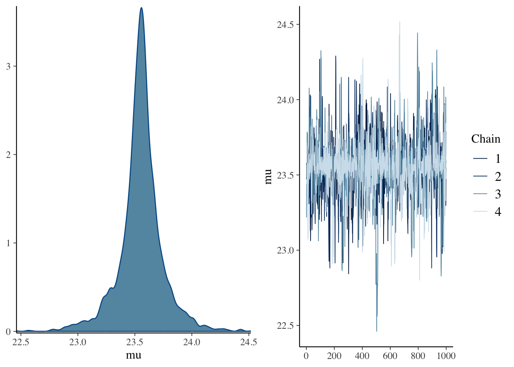
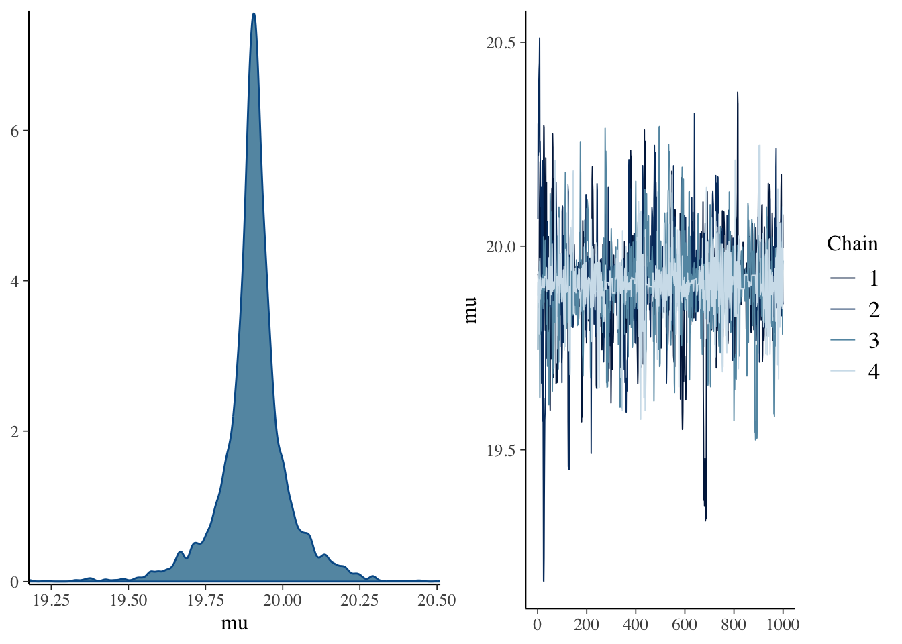
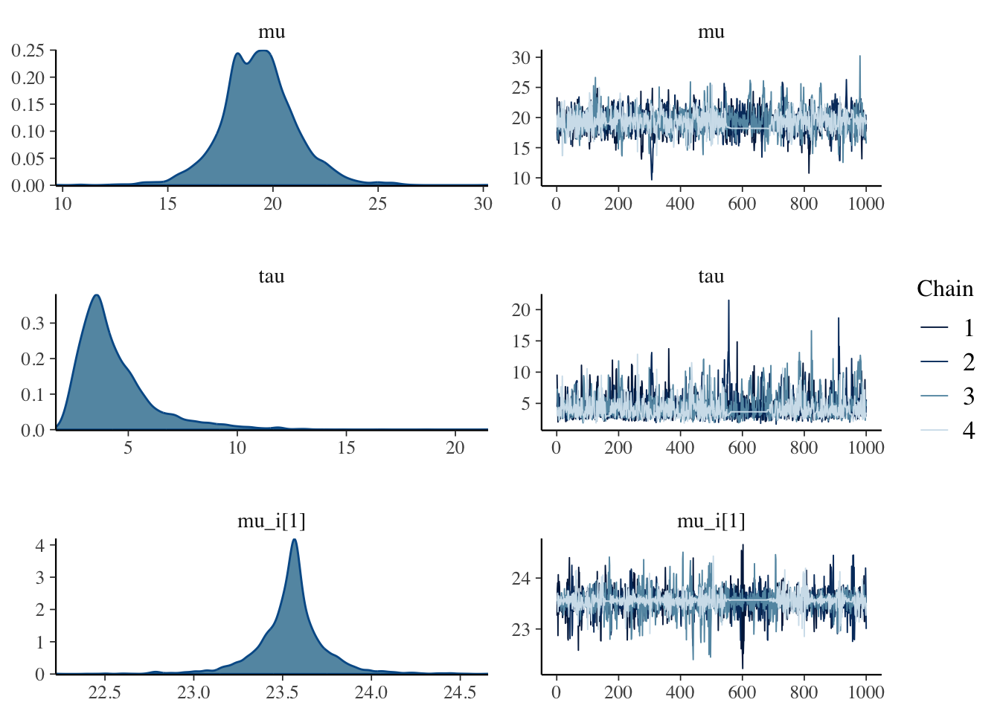
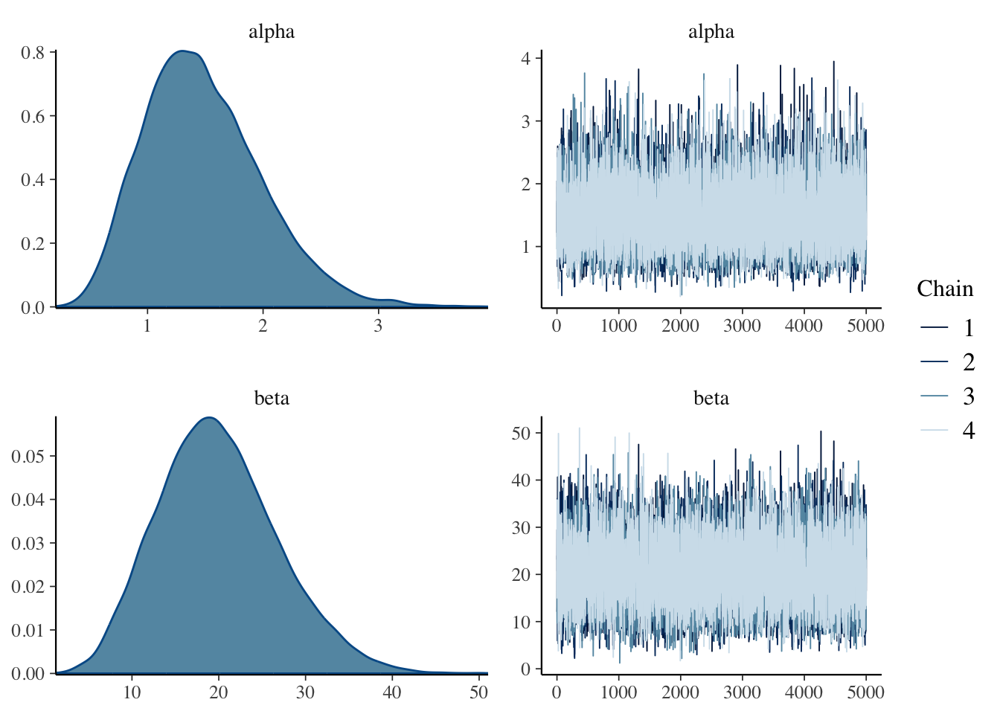
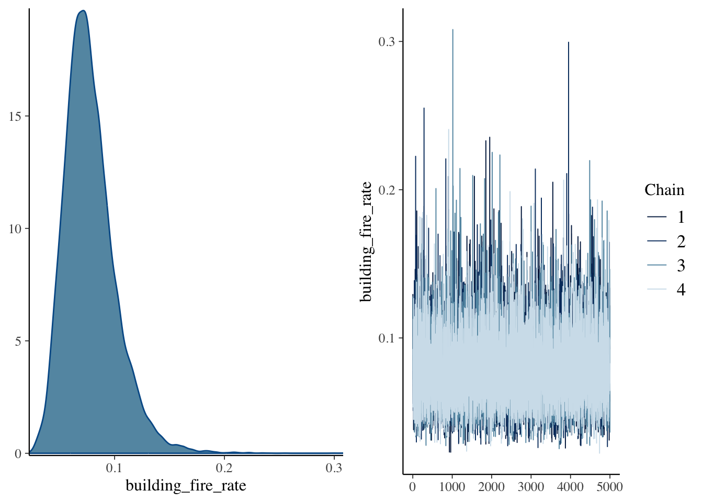
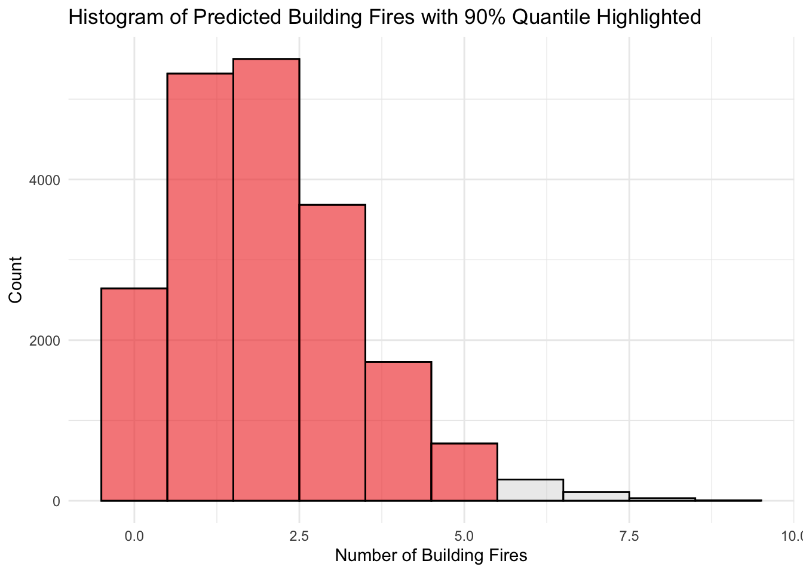

data <- tibble(
jugador = c('Murray', 'Simon', 'Federer', 'Ferrer', 'Isner', 'Kyrgios'),
n = c(731, 570, 491, 456, 403, 274),
y = c(23.56, 18.07, 16.21, 21.7, 22.31, 14.11)
)
calcular_intervalo <- function(samples) {
# Extract the list of variable names
var_names <- dimnames(samples)$variable
ci_width_list <- list()
for (var in var_names) {
param_samples <- as.array(samples[, , var])
param_samples_vector <- as.vector(param_samples)
ci_bounds <- quantile(param_samples_vector, probs = c(0.05, 0.95))
ci_width <- ci_bounds[2] - ci_bounds[1]
ci_width_list[[var]] <- ci_width
}
return(ci_width_list)
}Parcial 2
Ejercicio 1
La siguiente tabla muestra el tamaño de muestra \(n_i\) y el tiempo-medio-al-servicio \(y_i\) (en segundos) para seis jugadores profesionales de tenis. Supongan que la media de la muestra para el jugador \(i\) \(y_i\) se distribuye normal con media \(\mu_i\) y desviación estándar \(\sigma/\sqrt{n_i}\) donde se supone que \(\sigma\) = 5,5 segundos.
| Jugador | n | ȳ |
|---|---|---|
| Murray | 731 | 23.56 |
| Simon | 570 | 18.07 |
| Federer | 491 | 16.21 |
| Ferrer | 456 | 21.70 |
| Isner | 403 | 22.32 |
| Kyrgios | 274 | 14.11 |
1.a.
Se está interesado en estimar el tiempo-medio-al-servicio de Murray \(\mu_1\) usando solo el tiempo al servicio de Murray. Supóngase que la creencia inicial sobre \(\mu_1\) se representa por una densidad normal con media 20 y desviación estándar 10. Encontrar la distribución posterior de \(\mu_1\) y construir un intervalo de credibilidad de 90 % para \(\mu_1\).
model_code <- '
data {
int<lower=0> n_obs;
real y_obs;
}
parameters {
real mu;
real<lower=0> sigma;
}
model {
// Priors
mu ~ normal(20, 10);
sigma ~ normal(0, 5.5);
// Likelihood
y_obs ~ normal(mu, sigma / sqrt(n_obs));
}
'
stan_model_path <- "models/ejercicio_1_a.stan"
writeLines(model_code, stan_model_path)
mod <- cmdstan_model(stan_model_path)
# datos
murray_data <- data %>% filter(jugador == "Murray")
data_list <- list(
n_obs = murray_data$n,
y_obs = murray_data$y
)
fit <- mod$sample(
data = data_list,
seed = 4,
chains = 4,
)Running MCMC with 4 sequential chains...
Chain 1 Iteration: 1 / 2000 [ 0%] (Warmup)
Chain 1 Iteration: 100 / 2000 [ 5%] (Warmup)
Chain 1 Iteration: 200 / 2000 [ 10%] (Warmup)
Chain 1 Iteration: 300 / 2000 [ 15%] (Warmup)
Chain 1 Iteration: 400 / 2000 [ 20%] (Warmup)
Chain 1 Iteration: 500 / 2000 [ 25%] (Warmup)
Chain 1 Iteration: 600 / 2000 [ 30%] (Warmup)
Chain 1 Iteration: 700 / 2000 [ 35%] (Warmup)
Chain 1 Iteration: 800 / 2000 [ 40%] (Warmup)
Chain 1 Iteration: 900 / 2000 [ 45%] (Warmup)
Chain 1 Iteration: 1000 / 2000 [ 50%] (Warmup)
Chain 1 Iteration: 1001 / 2000 [ 50%] (Sampling)
Chain 1 Iteration: 1100 / 2000 [ 55%] (Sampling)
Chain 1 Iteration: 1200 / 2000 [ 60%] (Sampling)
Chain 1 Iteration: 1300 / 2000 [ 65%] (Sampling)
Chain 1 Iteration: 1400 / 2000 [ 70%] (Sampling)
Chain 1 Iteration: 1500 / 2000 [ 75%] (Sampling)
Chain 1 Iteration: 1600 / 2000 [ 80%] (Sampling)
Chain 1 Iteration: 1700 / 2000 [ 85%] (Sampling)
Chain 1 Iteration: 1800 / 2000 [ 90%] (Sampling)
Chain 1 Iteration: 1900 / 2000 [ 95%] (Sampling)
Chain 1 Iteration: 2000 / 2000 [100%] (Sampling)
Chain 1 finished in 0.0 seconds.
Chain 2 Iteration: 1 / 2000 [ 0%] (Warmup)
Chain 2 Iteration: 100 / 2000 [ 5%] (Warmup)
Chain 2 Iteration: 200 / 2000 [ 10%] (Warmup)
Chain 2 Iteration: 300 / 2000 [ 15%] (Warmup)
Chain 2 Iteration: 400 / 2000 [ 20%] (Warmup)
Chain 2 Iteration: 500 / 2000 [ 25%] (Warmup)
Chain 2 Iteration: 600 / 2000 [ 30%] (Warmup)
Chain 2 Iteration: 700 / 2000 [ 35%] (Warmup)
Chain 2 Iteration: 800 / 2000 [ 40%] (Warmup)
Chain 2 Iteration: 900 / 2000 [ 45%] (Warmup)
Chain 2 Iteration: 1000 / 2000 [ 50%] (Warmup)
Chain 2 Iteration: 1001 / 2000 [ 50%] (Sampling)
Chain 2 Iteration: 1100 / 2000 [ 55%] (Sampling)
Chain 2 Iteration: 1200 / 2000 [ 60%] (Sampling)
Chain 2 Iteration: 1300 / 2000 [ 65%] (Sampling)
Chain 2 Iteration: 1400 / 2000 [ 70%] (Sampling)
Chain 2 Iteration: 1500 / 2000 [ 75%] (Sampling)
Chain 2 Iteration: 1600 / 2000 [ 80%] (Sampling)
Chain 2 Iteration: 1700 / 2000 [ 85%] (Sampling)
Chain 2 Iteration: 1800 / 2000 [ 90%] (Sampling)
Chain 2 Iteration: 1900 / 2000 [ 95%] (Sampling)
Chain 2 Iteration: 2000 / 2000 [100%] (Sampling)
Chain 2 finished in 0.0 seconds.
Chain 3 Iteration: 1 / 2000 [ 0%] (Warmup)
Chain 3 Iteration: 100 / 2000 [ 5%] (Warmup)
Chain 3 Iteration: 200 / 2000 [ 10%] (Warmup)
Chain 3 Iteration: 300 / 2000 [ 15%] (Warmup)
Chain 3 Iteration: 400 / 2000 [ 20%] (Warmup)
Chain 3 Iteration: 500 / 2000 [ 25%] (Warmup)
Chain 3 Iteration: 600 / 2000 [ 30%] (Warmup)
Chain 3 Iteration: 700 / 2000 [ 35%] (Warmup)
Chain 3 Iteration: 800 / 2000 [ 40%] (Warmup)
Chain 3 Iteration: 900 / 2000 [ 45%] (Warmup)
Chain 3 Iteration: 1000 / 2000 [ 50%] (Warmup)
Chain 3 Iteration: 1001 / 2000 [ 50%] (Sampling)
Chain 3 Iteration: 1100 / 2000 [ 55%] (Sampling)
Chain 3 Iteration: 1200 / 2000 [ 60%] (Sampling)
Chain 3 Iteration: 1300 / 2000 [ 65%] (Sampling)
Chain 3 Iteration: 1400 / 2000 [ 70%] (Sampling)
Chain 3 Iteration: 1500 / 2000 [ 75%] (Sampling)
Chain 3 Iteration: 1600 / 2000 [ 80%] (Sampling)
Chain 3 Iteration: 1700 / 2000 [ 85%] (Sampling)
Chain 3 Iteration: 1800 / 2000 [ 90%] (Sampling)
Chain 3 Iteration: 1900 / 2000 [ 95%] (Sampling)
Chain 3 Iteration: 2000 / 2000 [100%] (Sampling)
Chain 3 finished in 0.0 seconds.
Chain 4 Iteration: 1 / 2000 [ 0%] (Warmup)
Chain 4 Iteration: 100 / 2000 [ 5%] (Warmup)
Chain 4 Iteration: 200 / 2000 [ 10%] (Warmup)
Chain 4 Iteration: 300 / 2000 [ 15%] (Warmup)
Chain 4 Iteration: 400 / 2000 [ 20%] (Warmup)
Chain 4 Iteration: 500 / 2000 [ 25%] (Warmup)
Chain 4 Iteration: 600 / 2000 [ 30%] (Warmup)
Chain 4 Iteration: 700 / 2000 [ 35%] (Warmup)
Chain 4 Iteration: 800 / 2000 [ 40%] (Warmup)
Chain 4 Iteration: 900 / 2000 [ 45%] (Warmup)
Chain 4 Iteration: 1000 / 2000 [ 50%] (Warmup)
Chain 4 Iteration: 1001 / 2000 [ 50%] (Sampling)
Chain 4 Iteration: 1100 / 2000 [ 55%] (Sampling)
Chain 4 Iteration: 1200 / 2000 [ 60%] (Sampling)
Chain 4 Iteration: 1300 / 2000 [ 65%] (Sampling)
Chain 4 Iteration: 1400 / 2000 [ 70%] (Sampling)
Chain 4 Iteration: 1500 / 2000 [ 75%] (Sampling)
Chain 4 Iteration: 1600 / 2000 [ 80%] (Sampling)
Chain 4 Iteration: 1700 / 2000 [ 85%] (Sampling)
Chain 4 Iteration: 1800 / 2000 [ 90%] (Sampling)
Chain 4 Iteration: 1900 / 2000 [ 95%] (Sampling)
Chain 4 Iteration: 2000 / 2000 [100%] (Sampling)
Chain 4 finished in 0.0 seconds.
All 4 chains finished successfully.
Mean chain execution time: 0.0 seconds.
Total execution time: 0.5 seconds.mcmc_combo(fit$draws(), pars = c("mu"))
# intervalo
mu_samples <- fit$draws(variables = "mu")
mu_ci_murray <- calcular_intervalo(mu_samples)
print("Intervalo del 90% para \u03BC")[1] "Intervalo del 90% para μ"print(mu_ci_murray)$mu
95%
0.635045 1.b
Suponer ahora que se cree que no hay diferencias entre los tiempos-medios-al servicio y \(\mu_1\) = … = \(\mu_6\) = \(\mu\). El tiempo-medio-al-servicio global es \(\bar{y}\) = 19,9 con un tamaño de muestra combinado de \(n = 2925\). Suponiendo que \(\mu\) tiene una distribución inicial \(N(20,10)\), encontrar la posterior de \(\mu\) y construir un intervalo de credibilidad de 90 % para \(\mu\).
model_code <- "
data {
real y_obs;
int<lower=0> n_obs;
}
parameters {
real mu;
real<lower=0> sigma;
}
model {
// Priors
mu ~ normal(20, 10);
sigma ~ normal(0, 5.5);
// Likelihood
y_obs ~ normal(mu, sigma / sqrt(n_obs));
}
"
stan_model_path <- "models/ejercicio_1_b.stan"
writeLines(model_code, stan_model_path)
mod <- cmdstan_model(stan_model_path)
# data
y_obs_all <- sum(data$y * data$n) / sum(data$n)
n_obs_all <- sum(data$n)
# Data list for Stan
data_list <- list(
y_obs = y_obs_all,
n_obs = n_obs_all
)
# Sampling
fit <- mod$sample(
data = data_list,
seed = 42,
chains = 4)Running MCMC with 4 sequential chains...
Chain 1 Iteration: 1 / 2000 [ 0%] (Warmup)
Chain 1 Iteration: 100 / 2000 [ 5%] (Warmup)
Chain 1 Iteration: 200 / 2000 [ 10%] (Warmup)
Chain 1 Iteration: 300 / 2000 [ 15%] (Warmup)
Chain 1 Iteration: 400 / 2000 [ 20%] (Warmup)
Chain 1 Iteration: 500 / 2000 [ 25%] (Warmup)
Chain 1 Iteration: 600 / 2000 [ 30%] (Warmup)
Chain 1 Iteration: 700 / 2000 [ 35%] (Warmup)
Chain 1 Iteration: 800 / 2000 [ 40%] (Warmup)
Chain 1 Iteration: 900 / 2000 [ 45%] (Warmup)
Chain 1 Iteration: 1000 / 2000 [ 50%] (Warmup)
Chain 1 Iteration: 1001 / 2000 [ 50%] (Sampling)
Chain 1 Iteration: 1100 / 2000 [ 55%] (Sampling)
Chain 1 Iteration: 1200 / 2000 [ 60%] (Sampling)
Chain 1 Iteration: 1300 / 2000 [ 65%] (Sampling)
Chain 1 Iteration: 1400 / 2000 [ 70%] (Sampling)
Chain 1 Iteration: 1500 / 2000 [ 75%] (Sampling)
Chain 1 Iteration: 1600 / 2000 [ 80%] (Sampling)
Chain 1 Iteration: 1700 / 2000 [ 85%] (Sampling)
Chain 1 Iteration: 1800 / 2000 [ 90%] (Sampling)
Chain 1 Iteration: 1900 / 2000 [ 95%] (Sampling)
Chain 1 Iteration: 2000 / 2000 [100%] (Sampling)
Chain 1 finished in 0.0 seconds.
Chain 2 Iteration: 1 / 2000 [ 0%] (Warmup)
Chain 2 Iteration: 100 / 2000 [ 5%] (Warmup)
Chain 2 Iteration: 200 / 2000 [ 10%] (Warmup)
Chain 2 Iteration: 300 / 2000 [ 15%] (Warmup)
Chain 2 Iteration: 400 / 2000 [ 20%] (Warmup)
Chain 2 Iteration: 500 / 2000 [ 25%] (Warmup)
Chain 2 Iteration: 600 / 2000 [ 30%] (Warmup)
Chain 2 Iteration: 700 / 2000 [ 35%] (Warmup)
Chain 2 Iteration: 800 / 2000 [ 40%] (Warmup)
Chain 2 Iteration: 900 / 2000 [ 45%] (Warmup)
Chain 2 Iteration: 1000 / 2000 [ 50%] (Warmup)
Chain 2 Iteration: 1001 / 2000 [ 50%] (Sampling)
Chain 2 Iteration: 1100 / 2000 [ 55%] (Sampling)
Chain 2 Iteration: 1200 / 2000 [ 60%] (Sampling)
Chain 2 Iteration: 1300 / 2000 [ 65%] (Sampling)
Chain 2 Iteration: 1400 / 2000 [ 70%] (Sampling)
Chain 2 Iteration: 1500 / 2000 [ 75%] (Sampling)
Chain 2 Iteration: 1600 / 2000 [ 80%] (Sampling)
Chain 2 Iteration: 1700 / 2000 [ 85%] (Sampling)
Chain 2 Iteration: 1800 / 2000 [ 90%] (Sampling)
Chain 2 Iteration: 1900 / 2000 [ 95%] (Sampling)
Chain 2 Iteration: 2000 / 2000 [100%] (Sampling)
Chain 2 finished in 0.0 seconds.
Chain 3 Iteration: 1 / 2000 [ 0%] (Warmup)
Chain 3 Iteration: 100 / 2000 [ 5%] (Warmup)
Chain 3 Iteration: 200 / 2000 [ 10%] (Warmup)
Chain 3 Iteration: 300 / 2000 [ 15%] (Warmup)
Chain 3 Iteration: 400 / 2000 [ 20%] (Warmup)
Chain 3 Iteration: 500 / 2000 [ 25%] (Warmup)
Chain 3 Iteration: 600 / 2000 [ 30%] (Warmup)
Chain 3 Iteration: 700 / 2000 [ 35%] (Warmup)
Chain 3 Iteration: 800 / 2000 [ 40%] (Warmup)
Chain 3 Iteration: 900 / 2000 [ 45%] (Warmup)
Chain 3 Iteration: 1000 / 2000 [ 50%] (Warmup)
Chain 3 Iteration: 1001 / 2000 [ 50%] (Sampling)
Chain 3 Iteration: 1100 / 2000 [ 55%] (Sampling)
Chain 3 Iteration: 1200 / 2000 [ 60%] (Sampling)
Chain 3 Iteration: 1300 / 2000 [ 65%] (Sampling)
Chain 3 Iteration: 1400 / 2000 [ 70%] (Sampling)
Chain 3 Iteration: 1500 / 2000 [ 75%] (Sampling)
Chain 3 Iteration: 1600 / 2000 [ 80%] (Sampling)
Chain 3 Iteration: 1700 / 2000 [ 85%] (Sampling)
Chain 3 Iteration: 1800 / 2000 [ 90%] (Sampling)
Chain 3 Iteration: 1900 / 2000 [ 95%] (Sampling)
Chain 3 Iteration: 2000 / 2000 [100%] (Sampling)
Chain 3 finished in 0.0 seconds.
Chain 4 Iteration: 1 / 2000 [ 0%] (Warmup)
Chain 4 Iteration: 100 / 2000 [ 5%] (Warmup)
Chain 4 Iteration: 200 / 2000 [ 10%] (Warmup)
Chain 4 Iteration: 300 / 2000 [ 15%] (Warmup)
Chain 4 Iteration: 400 / 2000 [ 20%] (Warmup)
Chain 4 Iteration: 500 / 2000 [ 25%] (Warmup)
Chain 4 Iteration: 600 / 2000 [ 30%] (Warmup)
Chain 4 Iteration: 700 / 2000 [ 35%] (Warmup)
Chain 4 Iteration: 800 / 2000 [ 40%] (Warmup)
Chain 4 Iteration: 900 / 2000 [ 45%] (Warmup)
Chain 4 Iteration: 1000 / 2000 [ 50%] (Warmup)
Chain 4 Iteration: 1001 / 2000 [ 50%] (Sampling)
Chain 4 Iteration: 1100 / 2000 [ 55%] (Sampling)
Chain 4 Iteration: 1200 / 2000 [ 60%] (Sampling)
Chain 4 Iteration: 1300 / 2000 [ 65%] (Sampling)
Chain 4 Iteration: 1400 / 2000 [ 70%] (Sampling)
Chain 4 Iteration: 1500 / 2000 [ 75%] (Sampling)
Chain 4 Iteration: 1600 / 2000 [ 80%] (Sampling)
Chain 4 Iteration: 1700 / 2000 [ 85%] (Sampling)
Chain 4 Iteration: 1800 / 2000 [ 90%] (Sampling)
Chain 4 Iteration: 1900 / 2000 [ 95%] (Sampling)
Chain 4 Iteration: 2000 / 2000 [100%] (Sampling)
Chain 4 finished in 0.0 seconds.
All 4 chains finished successfully.
Mean chain execution time: 0.0 seconds.
Total execution time: 0.5 seconds.Warning: 223 of 4000 (6.0%) transitions ended with a divergence.
See https://mc-stan.org/misc/warnings for details.print(fit$summary())# A tibble: 3 × 10
variable mean median sd mad q5 q95 rhat ess_bulk ess_tail
<chr> <dbl> <dbl> <dbl> <dbl> <dbl> <dbl> <dbl> <dbl> <dbl>
1 lp__ 2.95 3.26 1.00 0.724 0.919 3.92 1.02 393. 430.
2 mu 19.9 19.9 0.109 0.0611 19.7 20.1 1.03 1058. 699.
3 sigma 4.65 4.00 3.23 3.28 0.789 10.8 1.04 203. 127.mcmc_combo(fit$draws(), pars = c("mu"))
# intervalo
mu_samples <- fit$draws(variables = "mu")
mu_ci <- calcular_intervalo(mu_samples)
print("Intervalo del 90% para \u03BC")[1] "Intervalo del 90% para μ"print(mu_ci)$mu
95%
0.359055 1.c
¿Qué enfoque, parte (a) o parte (b), parece más razonable en esta situación?
Depende de lo que necesites saber. Si quieres el tiempo promedio de todos buscando generalizar, usa el promedio total. Si te interesa el tiempo de un jugador específico, mira solo sus datos
Ejercicio 2
Continuando con el problema anterior, suponer que se quiere estimar el tiempo- medio-al servicio para los seis tenistas siguiendo un modelo jerárquico. Recordar que se supone \(\sigma = 5,5\) segundos.
\(\bar{y}_i \sim N(\mu_i,\sigma/\sqrt{n_i}), \quad i = 1,...,6\)
\(\mu_i \sim N(\mu,\tau), \quad i = 1,...,6\)
\(\mu \sim N(20,1/0.0001),\)
\(1/\tau^2 \sim G(0.01,0.1)\)
2.a
Usar JAGS o Stan para simular una muestra de tamaño 1000 de la distribución posterior del modelo jerárquico.
model_code <- '
data {
int<lower=0> N;
vector[N] y;
vector<lower=0>[N] n;
}
parameters {
real mu;
real<lower=0> inv_tau_squared;
vector[N] mu_i;
real<lower=0> sigma;
}
transformed parameters {
real<lower=0> tau = sqrt(1 / inv_tau_squared);
}
model {
// Priors
mu ~ normal(20, 10);
inv_tau_squared ~ gamma(0.01, 0.1);
sigma ~ normal(0, 5.5);
mu_i ~ normal(mu, tau);
// Likelihood
y ~ normal(mu_i, sigma ./ sqrt(n));
}
'
stan_model_path <- "models/ejercicio_2_a.stan"
writeLines(model_code, stan_model_path)
mod <- cmdstan_model(stan_model_path)
data_list <- list(
N = nrow(data),
y = data$y,
n = data$n
)
# Sampling
fit <- mod$sample(
data = data_list,
seed = 4,
chains = 4
)Running MCMC with 4 sequential chains...
Chain 1 Iteration: 1 / 2000 [ 0%] (Warmup)
Chain 1 Iteration: 100 / 2000 [ 5%] (Warmup)
Chain 1 Iteration: 200 / 2000 [ 10%] (Warmup)
Chain 1 Iteration: 300 / 2000 [ 15%] (Warmup)
Chain 1 Iteration: 400 / 2000 [ 20%] (Warmup)
Chain 1 Iteration: 500 / 2000 [ 25%] (Warmup)
Chain 1 Iteration: 600 / 2000 [ 30%] (Warmup)
Chain 1 Iteration: 700 / 2000 [ 35%] (Warmup)
Chain 1 Iteration: 800 / 2000 [ 40%] (Warmup)
Chain 1 Iteration: 900 / 2000 [ 45%] (Warmup)
Chain 1 Iteration: 1000 / 2000 [ 50%] (Warmup)
Chain 1 Iteration: 1001 / 2000 [ 50%] (Sampling)
Chain 1 Iteration: 1100 / 2000 [ 55%] (Sampling)
Chain 1 Iteration: 1200 / 2000 [ 60%] (Sampling)
Chain 1 Iteration: 1300 / 2000 [ 65%] (Sampling)
Chain 1 Iteration: 1400 / 2000 [ 70%] (Sampling)
Chain 1 Iteration: 1500 / 2000 [ 75%] (Sampling)
Chain 1 Iteration: 1600 / 2000 [ 80%] (Sampling)
Chain 1 Iteration: 1700 / 2000 [ 85%] (Sampling)
Chain 1 Iteration: 1800 / 2000 [ 90%] (Sampling)
Chain 1 Iteration: 1900 / 2000 [ 95%] (Sampling)
Chain 1 Iteration: 2000 / 2000 [100%] (Sampling)
Chain 1 finished in 0.1 seconds.
Chain 2 Iteration: 1 / 2000 [ 0%] (Warmup)
Chain 2 Iteration: 100 / 2000 [ 5%] (Warmup)
Chain 2 Iteration: 200 / 2000 [ 10%] (Warmup)
Chain 2 Iteration: 300 / 2000 [ 15%] (Warmup)
Chain 2 Iteration: 400 / 2000 [ 20%] (Warmup)
Chain 2 Iteration: 500 / 2000 [ 25%] (Warmup)
Chain 2 Iteration: 600 / 2000 [ 30%] (Warmup)
Chain 2 Iteration: 700 / 2000 [ 35%] (Warmup)
Chain 2 Iteration: 800 / 2000 [ 40%] (Warmup)
Chain 2 Iteration: 900 / 2000 [ 45%] (Warmup)
Chain 2 Iteration: 1000 / 2000 [ 50%] (Warmup)
Chain 2 Iteration: 1001 / 2000 [ 50%] (Sampling)
Chain 2 Iteration: 1100 / 2000 [ 55%] (Sampling)
Chain 2 Iteration: 1200 / 2000 [ 60%] (Sampling)
Chain 2 Iteration: 1300 / 2000 [ 65%] (Sampling)
Chain 2 Iteration: 1400 / 2000 [ 70%] (Sampling)
Chain 2 Iteration: 1500 / 2000 [ 75%] (Sampling)
Chain 2 Iteration: 1600 / 2000 [ 80%] (Sampling)
Chain 2 Iteration: 1700 / 2000 [ 85%] (Sampling)
Chain 2 Iteration: 1800 / 2000 [ 90%] (Sampling)
Chain 2 Iteration: 1900 / 2000 [ 95%] (Sampling)
Chain 2 Iteration: 2000 / 2000 [100%] (Sampling) Chain 2 Informational Message: The current Metropolis proposal is about to be rejected because of the following issue:Chain 2 Exception: gamma_lpdf: Random variable is 0, but must be positive finite! (in '/var/folders/x3/914g3z3n6p375ndfhpljnmhm0000gq/T/RtmpuV0U0z/model-11a706c2d9ca.stan', line 22, column 2 to column 37)Chain 2 If this warning occurs sporadically, such as for highly constrained variable types like covariance matrices, then the sampler is fine,Chain 2 but if this warning occurs often then your model may be either severely ill-conditioned or misspecified.Chain 2 Chain 2 finished in 0.1 seconds.
Chain 3 Iteration: 1 / 2000 [ 0%] (Warmup)
Chain 3 Iteration: 100 / 2000 [ 5%] (Warmup)
Chain 3 Iteration: 200 / 2000 [ 10%] (Warmup)
Chain 3 Iteration: 300 / 2000 [ 15%] (Warmup)
Chain 3 Iteration: 400 / 2000 [ 20%] (Warmup)
Chain 3 Iteration: 500 / 2000 [ 25%] (Warmup)
Chain 3 Iteration: 600 / 2000 [ 30%] (Warmup)
Chain 3 Iteration: 700 / 2000 [ 35%] (Warmup)
Chain 3 Iteration: 800 / 2000 [ 40%] (Warmup)
Chain 3 Iteration: 900 / 2000 [ 45%] (Warmup)
Chain 3 Iteration: 1000 / 2000 [ 50%] (Warmup)
Chain 3 Iteration: 1001 / 2000 [ 50%] (Sampling)
Chain 3 Iteration: 1100 / 2000 [ 55%] (Sampling)
Chain 3 Iteration: 1200 / 2000 [ 60%] (Sampling)
Chain 3 Iteration: 1300 / 2000 [ 65%] (Sampling)
Chain 3 Iteration: 1400 / 2000 [ 70%] (Sampling)
Chain 3 Iteration: 1500 / 2000 [ 75%] (Sampling)
Chain 3 Iteration: 1600 / 2000 [ 80%] (Sampling)
Chain 3 Iteration: 1700 / 2000 [ 85%] (Sampling)
Chain 3 Iteration: 1800 / 2000 [ 90%] (Sampling)
Chain 3 Iteration: 1900 / 2000 [ 95%] (Sampling)
Chain 3 Iteration: 2000 / 2000 [100%] (Sampling)
Chain 3 finished in 0.1 seconds.
Chain 4 Iteration: 1 / 2000 [ 0%] (Warmup)
Chain 4 Iteration: 100 / 2000 [ 5%] (Warmup)
Chain 4 Iteration: 200 / 2000 [ 10%] (Warmup)
Chain 4 Iteration: 300 / 2000 [ 15%] (Warmup)
Chain 4 Iteration: 400 / 2000 [ 20%] (Warmup)
Chain 4 Iteration: 500 / 2000 [ 25%] (Warmup)
Chain 4 Iteration: 600 / 2000 [ 30%] (Warmup)
Chain 4 Iteration: 700 / 2000 [ 35%] (Warmup)
Chain 4 Iteration: 800 / 2000 [ 40%] (Warmup)
Chain 4 Iteration: 900 / 2000 [ 45%] (Warmup)
Chain 4 Iteration: 1000 / 2000 [ 50%] (Warmup)
Chain 4 Iteration: 1001 / 2000 [ 50%] (Sampling)
Chain 4 Iteration: 1100 / 2000 [ 55%] (Sampling)
Chain 4 Iteration: 1200 / 2000 [ 60%] (Sampling)
Chain 4 Iteration: 1300 / 2000 [ 65%] (Sampling)
Chain 4 Iteration: 1400 / 2000 [ 70%] (Sampling)
Chain 4 Iteration: 1500 / 2000 [ 75%] (Sampling)
Chain 4 Iteration: 1600 / 2000 [ 80%] (Sampling)
Chain 4 Iteration: 1700 / 2000 [ 85%] (Sampling)
Chain 4 Iteration: 1800 / 2000 [ 90%] (Sampling)
Chain 4 Iteration: 1900 / 2000 [ 95%] (Sampling)
Chain 4 Iteration: 2000 / 2000 [100%] (Sampling)
Chain 4 finished in 0.1 seconds.
All 4 chains finished successfully.
Mean chain execution time: 0.1 seconds.
Total execution time: 0.5 seconds.Warning: 26 of 4000 (1.0%) transitions ended with a divergence.
See https://mc-stan.org/misc/warnings for details.Warning: 1 of 4 chains had an E-BFMI less than 0.3.
See https://mc-stan.org/misc/warnings for details.fit$summary()# A tibble: 11 × 10
variable mean median sd mad q5 q95 rhat ess_bulk
<chr> <dbl> <dbl> <dbl> <dbl> <dbl> <dbl> <dbl> <dbl>
1 lp__ -2.82 -3.17 5.08 4.82 -10.8 6.41 1.07 54.6
2 mu 19.3 19.3 1.79 1.58 16.5 22.3 1.00 1370.
3 inv_tau_squared 0.0730 0.0655 0.0449 0.0400 0.0156 0.159 1.01 1530.
4 mu_i[1] 23.5 23.6 0.202 0.121 23.2 23.8 1.02 4705.
5 mu_i[2] 18.1 18.1 0.228 0.141 17.7 18.5 1.02 4918.
6 mu_i[3] 16.2 16.2 0.251 0.146 15.8 16.6 1.04 3558.
7 mu_i[4] 21.7 21.7 0.262 0.157 21.3 22.1 1.02 4023.
8 mu_i[5] 22.3 22.3 0.276 0.164 21.9 22.7 1.02 4072.
9 mu_i[6] 14.1 14.1 0.336 0.201 13.6 14.7 1.02 4580.
10 sigma 4.59 3.96 3.17 3.02 0.688 10.7 1.06 53.7
11 tau 4.38 3.91 1.78 1.21 2.51 8.01 1.01 1530.
# ℹ 1 more variable: ess_tail <dbl>mcmc_combo(fit$draws(), pars = c("mu","tau","mu_i[1]"))
2.b
Construir un intervalo de credibilidad para cada una de las medias
# intervalo
mu_samples <- fit$draws(variables = c("mu","mu_i[1]","mu_i[2]","mu_i[3]","mu_i[4]","mu_i[5]","mu_i[6]"))
mu_ci <- calcular_intervalo(mu_samples)
print(mu_ci) # intervalo del 90%$mu
95%
5.86079
$`mu_i[1]`
95%
0.622585
$`mu_i[2]`
95%
0.74005
$`mu_i[3]`
95%
0.792935
$`mu_i[4]`
95%
0.8383
$`mu_i[5]`
95%
0.856525
$`mu_i[6]`
95%
1.06437 2.c
Comparar los intervalos de credibilidad para Murray con los intervalos obtenidos en el ejercicio 1.
sprintf("Intervalo de confianza Murray (1): %.4f",mu_ci_murray)[1] "Intervalo de confianza Murray (1): 0.6350"sprintf("Intervalo de confianza Murray (2) [jerárquico]: %.4f",mu_ci$`mu_i[1]`)[1] "Intervalo de confianza Murray (2) [jerárquico]: 0.6226"3
Resolver el siguiente ejercicio. Pueden usar JAGS o Stan
Table 10.7 displays the number of fire calls and the number of building fires for ten counties in Montgomery County, Pennsylvania from 2015 through 2019. This data is currently described as Emergency - 911 Calls” from kaggle.com. Suppose that the number of building fires for the \(j-th\) zip code is Poisson with mean \(n_j \lambda_j\) where \(n_j\) and \(\lambda_j\) are respectively the number of fire calls and rate of building fires for the \(j-th\) zip code.
Table 10.7. The number of fire calls and building fires for ten zip codes in Montgomery County, Pennsylvania.
| Zip Code | Fire Calls | ̄Building Fire |
|---|---|---|
| 18054 | 266 | 12 |
| 18103 | 1 | 0 |
| 19010 | 1470 | 59 |
| 19025 | 246 | 11 |
| 19040 | 1093 | 47 |
| 19066 | 435 | 26 |
| 19116 | 2 | 0 |
| 19406 | 2092 | 113 |
| 19428 | 2025 | 73 |
| 19474 | 4 | 1 |
fire_data <- tibble(
zip_code = c(18054, 18103, 19010, 19025, 19040, 19066, 19116, 19406, 19428, 19474),
fire_calls = c(266, 1, 1470, 246, 1093, 435, 2, 2092, 2025, 4),
building_fire = c(12, 0, 59, 11, 47, 26, 0, 113, 73, 1)
)
# rates
fire_data <- fire_data %>%
mutate(rate = if_else(building_fire > 0, fire_calls / building_fire, 0.001))3.a
Suppose that the building fire rates \(\lambda_1,\dots,\lambda_{10}\) follow a common \(Gamma(\alpha, \beta)\) distribution where the hyperparameters \(\alpha\) and \(\beta\) follow weakly informative distributions. Use JAGS to simulate a sample of size 5000 from the joint posterior distribution of all parameters of the model.
model_code <- '
data {
int<lower=0> N;
vector<lower=0>[N] fire_calls;
array[N] int<lower=0> building_fires;
}
parameters {
real<lower=0> alpha;
real<lower=0> beta;
vector<lower=0>[N] lambda;
}
transformed parameters {
real building_fire_rate = alpha / beta;
}
model {
// Weakly informative priors for hyperparameters
alpha ~ normal(0, 10);
beta ~ normal(0, 10);
lambda ~ gamma(alpha, beta);
// Likelihood
for (i in 1:N) {
building_fires[i] ~ poisson(lambda[i] * fire_calls[i]);
}
}
'
stan_model_path <- "models/ejercicio_3_a.stan"
writeLines(model_code, stan_model_path)
# Compile the model
mod <- cmdstan_model(stan_model_path)
# Create data list as per your dataset
data_list <- list(
N = nrow(fire_data),
fire_calls = fire_data$fire_calls,
building_fires = fire_data$building_fire
)
# Sampling
fit <- mod$sample(
data = data_list,
seed = 1234,
chains = 4,
iter_sampling = 5000,
iter_warmup = 1000
)Running MCMC with 4 sequential chains...
Chain 1 Iteration: 1 / 6000 [ 0%] (Warmup)
Chain 1 Iteration: 100 / 6000 [ 1%] (Warmup)
Chain 1 Iteration: 200 / 6000 [ 3%] (Warmup)
Chain 1 Iteration: 300 / 6000 [ 5%] (Warmup)
Chain 1 Iteration: 400 / 6000 [ 6%] (Warmup)
Chain 1 Iteration: 500 / 6000 [ 8%] (Warmup)
Chain 1 Iteration: 600 / 6000 [ 10%] (Warmup)
Chain 1 Iteration: 700 / 6000 [ 11%] (Warmup)
Chain 1 Iteration: 800 / 6000 [ 13%] (Warmup)
Chain 1 Iteration: 900 / 6000 [ 15%] (Warmup)
Chain 1 Iteration: 1000 / 6000 [ 16%] (Warmup)
Chain 1 Iteration: 1001 / 6000 [ 16%] (Sampling)
Chain 1 Iteration: 1100 / 6000 [ 18%] (Sampling)
Chain 1 Iteration: 1200 / 6000 [ 20%] (Sampling)
Chain 1 Iteration: 1300 / 6000 [ 21%] (Sampling)
Chain 1 Iteration: 1400 / 6000 [ 23%] (Sampling)
Chain 1 Iteration: 1500 / 6000 [ 25%] (Sampling)
Chain 1 Iteration: 1600 / 6000 [ 26%] (Sampling)
Chain 1 Iteration: 1700 / 6000 [ 28%] (Sampling)
Chain 1 Iteration: 1800 / 6000 [ 30%] (Sampling)
Chain 1 Iteration: 1900 / 6000 [ 31%] (Sampling)
Chain 1 Iteration: 2000 / 6000 [ 33%] (Sampling)
Chain 1 Iteration: 2100 / 6000 [ 35%] (Sampling)
Chain 1 Iteration: 2200 / 6000 [ 36%] (Sampling)
Chain 1 Iteration: 2300 / 6000 [ 38%] (Sampling)
Chain 1 Iteration: 2400 / 6000 [ 40%] (Sampling)
Chain 1 Iteration: 2500 / 6000 [ 41%] (Sampling)
Chain 1 Iteration: 2600 / 6000 [ 43%] (Sampling) Chain 1 Informational Message: The current Metropolis proposal is about to be rejected because of the following issue:Chain 1 Exception: gamma_lpdf: Random variable[8] is 0, but must be positive finite! (in '/var/folders/x3/914g3z3n6p375ndfhpljnmhm0000gq/T/RtmpuV0U0z/model-11a702ec4dbc.stan', line 24, column 2 to column 30)Chain 1 If this warning occurs sporadically, such as for highly constrained variable types like covariance matrices, then the sampler is fine,Chain 1 but if this warning occurs often then your model may be either severely ill-conditioned or misspecified.Chain 1 Chain 1 Informational Message: The current Metropolis proposal is about to be rejected because of the following issue:Chain 1 Exception: gamma_lpdf: Random variable[8] is 0, but must be positive finite! (in '/var/folders/x3/914g3z3n6p375ndfhpljnmhm0000gq/T/RtmpuV0U0z/model-11a702ec4dbc.stan', line 24, column 2 to column 30)Chain 1 If this warning occurs sporadically, such as for highly constrained variable types like covariance matrices, then the sampler is fine,Chain 1 but if this warning occurs often then your model may be either severely ill-conditioned or misspecified.Chain 1 Chain 1 Informational Message: The current Metropolis proposal is about to be rejected because of the following issue:Chain 1 Exception: gamma_lpdf: Random variable[9] is 0, but must be positive finite! (in '/var/folders/x3/914g3z3n6p375ndfhpljnmhm0000gq/T/RtmpuV0U0z/model-11a702ec4dbc.stan', line 24, column 2 to column 30)Chain 1 If this warning occurs sporadically, such as for highly constrained variable types like covariance matrices, then the sampler is fine,Chain 1 but if this warning occurs often then your model may be either severely ill-conditioned or misspecified.Chain 1 Chain 1 Informational Message: The current Metropolis proposal is about to be rejected because of the following issue:Chain 1 Exception: gamma_lpdf: Random variable[1] is 0, but must be positive finite! (in '/var/folders/x3/914g3z3n6p375ndfhpljnmhm0000gq/T/RtmpuV0U0z/model-11a702ec4dbc.stan', line 24, column 2 to column 30)Chain 1 If this warning occurs sporadically, such as for highly constrained variable types like covariance matrices, then the sampler is fine,Chain 1 but if this warning occurs often then your model may be either severely ill-conditioned or misspecified.Chain 1 Chain 1 Iteration: 2700 / 6000 [ 45%] (Sampling)
Chain 1 Iteration: 2800 / 6000 [ 46%] (Sampling)
Chain 1 Iteration: 2900 / 6000 [ 48%] (Sampling)
Chain 1 Iteration: 3000 / 6000 [ 50%] (Sampling)
Chain 1 Iteration: 3100 / 6000 [ 51%] (Sampling)
Chain 1 Iteration: 3200 / 6000 [ 53%] (Sampling)
Chain 1 Iteration: 3300 / 6000 [ 55%] (Sampling)
Chain 1 Iteration: 3400 / 6000 [ 56%] (Sampling)
Chain 1 Iteration: 3500 / 6000 [ 58%] (Sampling)
Chain 1 Iteration: 3600 / 6000 [ 60%] (Sampling)
Chain 1 Iteration: 3700 / 6000 [ 61%] (Sampling)
Chain 1 Iteration: 3800 / 6000 [ 63%] (Sampling)
Chain 1 Iteration: 3900 / 6000 [ 65%] (Sampling)
Chain 1 Iteration: 4000 / 6000 [ 66%] (Sampling)
Chain 1 Iteration: 4100 / 6000 [ 68%] (Sampling)
Chain 1 Iteration: 4200 / 6000 [ 70%] (Sampling)
Chain 1 Iteration: 4300 / 6000 [ 71%] (Sampling)
Chain 1 Iteration: 4400 / 6000 [ 73%] (Sampling)
Chain 1 Iteration: 4500 / 6000 [ 75%] (Sampling)
Chain 1 Iteration: 4600 / 6000 [ 76%] (Sampling)
Chain 1 Iteration: 4700 / 6000 [ 78%] (Sampling)
Chain 1 Iteration: 4800 / 6000 [ 80%] (Sampling)
Chain 1 Iteration: 4900 / 6000 [ 81%] (Sampling)
Chain 1 Iteration: 5000 / 6000 [ 83%] (Sampling)
Chain 1 Iteration: 5100 / 6000 [ 85%] (Sampling)
Chain 1 Iteration: 5200 / 6000 [ 86%] (Sampling)
Chain 1 Iteration: 5300 / 6000 [ 88%] (Sampling)
Chain 1 Iteration: 5400 / 6000 [ 90%] (Sampling)
Chain 1 Iteration: 5500 / 6000 [ 91%] (Sampling)
Chain 1 Iteration: 5600 / 6000 [ 93%] (Sampling)
Chain 1 Iteration: 5700 / 6000 [ 95%] (Sampling)
Chain 1 Iteration: 5800 / 6000 [ 96%] (Sampling)
Chain 1 Iteration: 5900 / 6000 [ 98%] (Sampling)
Chain 1 Iteration: 6000 / 6000 [100%] (Sampling)
Chain 1 finished in 0.1 seconds.
Chain 2 Iteration: 1 / 6000 [ 0%] (Warmup)
Chain 2 Iteration: 100 / 6000 [ 1%] (Warmup)
Chain 2 Iteration: 200 / 6000 [ 3%] (Warmup)
Chain 2 Iteration: 300 / 6000 [ 5%] (Warmup)
Chain 2 Iteration: 400 / 6000 [ 6%] (Warmup)
Chain 2 Iteration: 500 / 6000 [ 8%] (Warmup)
Chain 2 Iteration: 600 / 6000 [ 10%] (Warmup)
Chain 2 Iteration: 700 / 6000 [ 11%] (Warmup)
Chain 2 Iteration: 800 / 6000 [ 13%] (Warmup)
Chain 2 Iteration: 900 / 6000 [ 15%] (Warmup)
Chain 2 Iteration: 1000 / 6000 [ 16%] (Warmup)
Chain 2 Iteration: 1001 / 6000 [ 16%] (Sampling)
Chain 2 Iteration: 1100 / 6000 [ 18%] (Sampling)
Chain 2 Iteration: 1200 / 6000 [ 20%] (Sampling)
Chain 2 Iteration: 1300 / 6000 [ 21%] (Sampling)
Chain 2 Iteration: 1400 / 6000 [ 23%] (Sampling)
Chain 2 Iteration: 1500 / 6000 [ 25%] (Sampling)
Chain 2 Iteration: 1600 / 6000 [ 26%] (Sampling)
Chain 2 Iteration: 1700 / 6000 [ 28%] (Sampling)
Chain 2 Iteration: 1800 / 6000 [ 30%] (Sampling)
Chain 2 Iteration: 1900 / 6000 [ 31%] (Sampling)
Chain 2 Iteration: 2000 / 6000 [ 33%] (Sampling)
Chain 2 Iteration: 2100 / 6000 [ 35%] (Sampling)
Chain 2 Iteration: 2200 / 6000 [ 36%] (Sampling)
Chain 2 Iteration: 2300 / 6000 [ 38%] (Sampling)
Chain 2 Iteration: 2400 / 6000 [ 40%] (Sampling)
Chain 2 Iteration: 2500 / 6000 [ 41%] (Sampling)
Chain 2 Iteration: 2600 / 6000 [ 43%] (Sampling)
Chain 2 Iteration: 2700 / 6000 [ 45%] (Sampling)
Chain 2 Iteration: 2800 / 6000 [ 46%] (Sampling)
Chain 2 Iteration: 2900 / 6000 [ 48%] (Sampling)
Chain 2 Iteration: 3000 / 6000 [ 50%] (Sampling)
Chain 2 Iteration: 3100 / 6000 [ 51%] (Sampling)
Chain 2 Iteration: 3200 / 6000 [ 53%] (Sampling)
Chain 2 Iteration: 3300 / 6000 [ 55%] (Sampling)
Chain 2 Iteration: 3400 / 6000 [ 56%] (Sampling)
Chain 2 Iteration: 3500 / 6000 [ 58%] (Sampling)
Chain 2 Iteration: 3600 / 6000 [ 60%] (Sampling)
Chain 2 Iteration: 3700 / 6000 [ 61%] (Sampling)
Chain 2 Iteration: 3800 / 6000 [ 63%] (Sampling)
Chain 2 Iteration: 3900 / 6000 [ 65%] (Sampling)
Chain 2 Iteration: 4000 / 6000 [ 66%] (Sampling) Chain 2 Informational Message: The current Metropolis proposal is about to be rejected because of the following issue:Chain 2 Exception: gamma_lpdf: Random variable[3] is 0, but must be positive finite! (in '/var/folders/x3/914g3z3n6p375ndfhpljnmhm0000gq/T/RtmpuV0U0z/model-11a702ec4dbc.stan', line 24, column 2 to column 30)Chain 2 If this warning occurs sporadically, such as for highly constrained variable types like covariance matrices, then the sampler is fine,Chain 2 but if this warning occurs often then your model may be either severely ill-conditioned or misspecified.Chain 2 Chain 2 Informational Message: The current Metropolis proposal is about to be rejected because of the following issue:Chain 2 Exception: gamma_lpdf: Random variable[3] is 0, but must be positive finite! (in '/var/folders/x3/914g3z3n6p375ndfhpljnmhm0000gq/T/RtmpuV0U0z/model-11a702ec4dbc.stan', line 24, column 2 to column 30)Chain 2 If this warning occurs sporadically, such as for highly constrained variable types like covariance matrices, then the sampler is fine,Chain 2 but if this warning occurs often then your model may be either severely ill-conditioned or misspecified.Chain 2 Chain 2 Informational Message: The current Metropolis proposal is about to be rejected because of the following issue:Chain 2 Exception: gamma_lpdf: Random variable[5] is 0, but must be positive finite! (in '/var/folders/x3/914g3z3n6p375ndfhpljnmhm0000gq/T/RtmpuV0U0z/model-11a702ec4dbc.stan', line 24, column 2 to column 30)Chain 2 If this warning occurs sporadically, such as for highly constrained variable types like covariance matrices, then the sampler is fine,Chain 2 but if this warning occurs often then your model may be either severely ill-conditioned or misspecified.Chain 2 Chain 2 Informational Message: The current Metropolis proposal is about to be rejected because of the following issue:Chain 2 Exception: gamma_lpdf: Random variable[1] is 0, but must be positive finite! (in '/var/folders/x3/914g3z3n6p375ndfhpljnmhm0000gq/T/RtmpuV0U0z/model-11a702ec4dbc.stan', line 24, column 2 to column 30)Chain 2 If this warning occurs sporadically, such as for highly constrained variable types like covariance matrices, then the sampler is fine,Chain 2 but if this warning occurs often then your model may be either severely ill-conditioned or misspecified.Chain 2 Chain 2 Informational Message: The current Metropolis proposal is about to be rejected because of the following issue:Chain 2 Exception: gamma_lpdf: Random variable[3] is 0, but must be positive finite! (in '/var/folders/x3/914g3z3n6p375ndfhpljnmhm0000gq/T/RtmpuV0U0z/model-11a702ec4dbc.stan', line 24, column 2 to column 30)Chain 2 If this warning occurs sporadically, such as for highly constrained variable types like covariance matrices, then the sampler is fine,Chain 2 but if this warning occurs often then your model may be either severely ill-conditioned or misspecified.Chain 2 Chain 2 Iteration: 4100 / 6000 [ 68%] (Sampling)
Chain 2 Iteration: 4200 / 6000 [ 70%] (Sampling)
Chain 2 Iteration: 4300 / 6000 [ 71%] (Sampling)
Chain 2 Iteration: 4400 / 6000 [ 73%] (Sampling)
Chain 2 Iteration: 4500 / 6000 [ 75%] (Sampling)
Chain 2 Iteration: 4600 / 6000 [ 76%] (Sampling)
Chain 2 Iteration: 4700 / 6000 [ 78%] (Sampling)
Chain 2 Iteration: 4800 / 6000 [ 80%] (Sampling)
Chain 2 Iteration: 4900 / 6000 [ 81%] (Sampling)
Chain 2 Iteration: 5000 / 6000 [ 83%] (Sampling)
Chain 2 Iteration: 5100 / 6000 [ 85%] (Sampling)
Chain 2 Iteration: 5200 / 6000 [ 86%] (Sampling)
Chain 2 Iteration: 5300 / 6000 [ 88%] (Sampling)
Chain 2 Iteration: 5400 / 6000 [ 90%] (Sampling)
Chain 2 Iteration: 5500 / 6000 [ 91%] (Sampling)
Chain 2 Iteration: 5600 / 6000 [ 93%] (Sampling)
Chain 2 Iteration: 5700 / 6000 [ 95%] (Sampling)
Chain 2 Iteration: 5800 / 6000 [ 96%] (Sampling)
Chain 2 Iteration: 5900 / 6000 [ 98%] (Sampling)
Chain 2 Iteration: 6000 / 6000 [100%] (Sampling)
Chain 2 finished in 0.1 seconds.
Chain 3 Iteration: 1 / 6000 [ 0%] (Warmup)
Chain 3 Iteration: 100 / 6000 [ 1%] (Warmup)
Chain 3 Iteration: 200 / 6000 [ 3%] (Warmup)
Chain 3 Iteration: 300 / 6000 [ 5%] (Warmup)
Chain 3 Iteration: 400 / 6000 [ 6%] (Warmup)
Chain 3 Iteration: 500 / 6000 [ 8%] (Warmup)
Chain 3 Iteration: 600 / 6000 [ 10%] (Warmup)
Chain 3 Iteration: 700 / 6000 [ 11%] (Warmup)
Chain 3 Iteration: 800 / 6000 [ 13%] (Warmup)
Chain 3 Iteration: 900 / 6000 [ 15%] (Warmup)
Chain 3 Iteration: 1000 / 6000 [ 16%] (Warmup)
Chain 3 Iteration: 1001 / 6000 [ 16%] (Sampling)
Chain 3 Iteration: 1100 / 6000 [ 18%] (Sampling)
Chain 3 Iteration: 1200 / 6000 [ 20%] (Sampling)
Chain 3 Iteration: 1300 / 6000 [ 21%] (Sampling)
Chain 3 Iteration: 1400 / 6000 [ 23%] (Sampling)
Chain 3 Iteration: 1500 / 6000 [ 25%] (Sampling)
Chain 3 Iteration: 1600 / 6000 [ 26%] (Sampling)
Chain 3 Iteration: 1700 / 6000 [ 28%] (Sampling)
Chain 3 Iteration: 1800 / 6000 [ 30%] (Sampling)
Chain 3 Iteration: 1900 / 6000 [ 31%] (Sampling)
Chain 3 Iteration: 2000 / 6000 [ 33%] (Sampling)
Chain 3 Iteration: 2100 / 6000 [ 35%] (Sampling)
Chain 3 Iteration: 2200 / 6000 [ 36%] (Sampling)
Chain 3 Iteration: 2300 / 6000 [ 38%] (Sampling)
Chain 3 Iteration: 2400 / 6000 [ 40%] (Sampling)
Chain 3 Iteration: 2500 / 6000 [ 41%] (Sampling)
Chain 3 Iteration: 2600 / 6000 [ 43%] (Sampling)
Chain 3 Iteration: 2700 / 6000 [ 45%] (Sampling)
Chain 3 Iteration: 2800 / 6000 [ 46%] (Sampling)
Chain 3 Iteration: 2900 / 6000 [ 48%] (Sampling)
Chain 3 Iteration: 3000 / 6000 [ 50%] (Sampling)
Chain 3 Iteration: 3100 / 6000 [ 51%] (Sampling)
Chain 3 Iteration: 3200 / 6000 [ 53%] (Sampling)
Chain 3 Iteration: 3300 / 6000 [ 55%] (Sampling)
Chain 3 Iteration: 3400 / 6000 [ 56%] (Sampling)
Chain 3 Iteration: 3500 / 6000 [ 58%] (Sampling) Chain 3 Informational Message: The current Metropolis proposal is about to be rejected because of the following issue:Chain 3 Exception: gamma_lpdf: Random variable[8] is 0, but must be positive finite! (in '/var/folders/x3/914g3z3n6p375ndfhpljnmhm0000gq/T/RtmpuV0U0z/model-11a702ec4dbc.stan', line 24, column 2 to column 30)Chain 3 If this warning occurs sporadically, such as for highly constrained variable types like covariance matrices, then the sampler is fine,Chain 3 but if this warning occurs often then your model may be either severely ill-conditioned or misspecified.Chain 3 Chain 3 Informational Message: The current Metropolis proposal is about to be rejected because of the following issue:Chain 3 Exception: gamma_lpdf: Random variable[8] is 0, but must be positive finite! (in '/var/folders/x3/914g3z3n6p375ndfhpljnmhm0000gq/T/RtmpuV0U0z/model-11a702ec4dbc.stan', line 24, column 2 to column 30)Chain 3 If this warning occurs sporadically, such as for highly constrained variable types like covariance matrices, then the sampler is fine,Chain 3 but if this warning occurs often then your model may be either severely ill-conditioned or misspecified.Chain 3 Chain 3 Informational Message: The current Metropolis proposal is about to be rejected because of the following issue:Chain 3 Exception: gamma_lpdf: Random variable[8] is 0, but must be positive finite! (in '/var/folders/x3/914g3z3n6p375ndfhpljnmhm0000gq/T/RtmpuV0U0z/model-11a702ec4dbc.stan', line 24, column 2 to column 30)Chain 3 If this warning occurs sporadically, such as for highly constrained variable types like covariance matrices, then the sampler is fine,Chain 3 but if this warning occurs often then your model may be either severely ill-conditioned or misspecified.Chain 3 Chain 3 Informational Message: The current Metropolis proposal is about to be rejected because of the following issue:Chain 3 Exception: gamma_lpdf: Random variable[1] is 0, but must be positive finite! (in '/var/folders/x3/914g3z3n6p375ndfhpljnmhm0000gq/T/RtmpuV0U0z/model-11a702ec4dbc.stan', line 24, column 2 to column 30)Chain 3 If this warning occurs sporadically, such as for highly constrained variable types like covariance matrices, then the sampler is fine,Chain 3 but if this warning occurs often then your model may be either severely ill-conditioned or misspecified.Chain 3 Chain 3 Informational Message: The current Metropolis proposal is about to be rejected because of the following issue:Chain 3 Exception: gamma_lpdf: Random variable[3] is 0, but must be positive finite! (in '/var/folders/x3/914g3z3n6p375ndfhpljnmhm0000gq/T/RtmpuV0U0z/model-11a702ec4dbc.stan', line 24, column 2 to column 30)Chain 3 If this warning occurs sporadically, such as for highly constrained variable types like covariance matrices, then the sampler is fine,Chain 3 but if this warning occurs often then your model may be either severely ill-conditioned or misspecified.Chain 3 Chain 3 Iteration: 3600 / 6000 [ 60%] (Sampling)
Chain 3 Iteration: 3700 / 6000 [ 61%] (Sampling)
Chain 3 Iteration: 3800 / 6000 [ 63%] (Sampling)
Chain 3 Iteration: 3900 / 6000 [ 65%] (Sampling)
Chain 3 Iteration: 4000 / 6000 [ 66%] (Sampling)
Chain 3 Iteration: 4100 / 6000 [ 68%] (Sampling)
Chain 3 Iteration: 4200 / 6000 [ 70%] (Sampling)
Chain 3 Iteration: 4300 / 6000 [ 71%] (Sampling)
Chain 3 Iteration: 4400 / 6000 [ 73%] (Sampling)
Chain 3 Iteration: 4500 / 6000 [ 75%] (Sampling)
Chain 3 Iteration: 4600 / 6000 [ 76%] (Sampling)
Chain 3 Iteration: 4700 / 6000 [ 78%] (Sampling)
Chain 3 Iteration: 4800 / 6000 [ 80%] (Sampling)
Chain 3 Iteration: 4900 / 6000 [ 81%] (Sampling)
Chain 3 Iteration: 5000 / 6000 [ 83%] (Sampling)
Chain 3 Iteration: 5100 / 6000 [ 85%] (Sampling)
Chain 3 Iteration: 5200 / 6000 [ 86%] (Sampling)
Chain 3 Iteration: 5300 / 6000 [ 88%] (Sampling)
Chain 3 Iteration: 5400 / 6000 [ 90%] (Sampling)
Chain 3 Iteration: 5500 / 6000 [ 91%] (Sampling)
Chain 3 Iteration: 5600 / 6000 [ 93%] (Sampling)
Chain 3 Iteration: 5700 / 6000 [ 95%] (Sampling)
Chain 3 Iteration: 5800 / 6000 [ 96%] (Sampling)
Chain 3 Iteration: 5900 / 6000 [ 98%] (Sampling)
Chain 3 Iteration: 6000 / 6000 [100%] (Sampling)
Chain 3 finished in 0.2 seconds.
Chain 4 Iteration: 1 / 6000 [ 0%] (Warmup)
Chain 4 Iteration: 100 / 6000 [ 1%] (Warmup)
Chain 4 Iteration: 200 / 6000 [ 3%] (Warmup)
Chain 4 Iteration: 300 / 6000 [ 5%] (Warmup)
Chain 4 Iteration: 400 / 6000 [ 6%] (Warmup)
Chain 4 Iteration: 500 / 6000 [ 8%] (Warmup)
Chain 4 Iteration: 600 / 6000 [ 10%] (Warmup)
Chain 4 Iteration: 700 / 6000 [ 11%] (Warmup)
Chain 4 Iteration: 800 / 6000 [ 13%] (Warmup)
Chain 4 Iteration: 900 / 6000 [ 15%] (Warmup)
Chain 4 Iteration: 1000 / 6000 [ 16%] (Warmup)
Chain 4 Iteration: 1001 / 6000 [ 16%] (Sampling)
Chain 4 Iteration: 1100 / 6000 [ 18%] (Sampling)
Chain 4 Iteration: 1200 / 6000 [ 20%] (Sampling)
Chain 4 Iteration: 1300 / 6000 [ 21%] (Sampling)
Chain 4 Iteration: 1400 / 6000 [ 23%] (Sampling)
Chain 4 Iteration: 1500 / 6000 [ 25%] (Sampling)
Chain 4 Iteration: 1600 / 6000 [ 26%] (Sampling)
Chain 4 Iteration: 1700 / 6000 [ 28%] (Sampling)
Chain 4 Iteration: 1800 / 6000 [ 30%] (Sampling)
Chain 4 Iteration: 1900 / 6000 [ 31%] (Sampling)
Chain 4 Iteration: 2000 / 6000 [ 33%] (Sampling)
Chain 4 Iteration: 2100 / 6000 [ 35%] (Sampling)
Chain 4 Iteration: 2200 / 6000 [ 36%] (Sampling)
Chain 4 Iteration: 2300 / 6000 [ 38%] (Sampling)
Chain 4 Iteration: 2400 / 6000 [ 40%] (Sampling)
Chain 4 Iteration: 2500 / 6000 [ 41%] (Sampling)
Chain 4 Iteration: 2600 / 6000 [ 43%] (Sampling)
Chain 4 Iteration: 2700 / 6000 [ 45%] (Sampling)
Chain 4 Iteration: 2800 / 6000 [ 46%] (Sampling)
Chain 4 Iteration: 2900 / 6000 [ 48%] (Sampling)
Chain 4 Iteration: 3000 / 6000 [ 50%] (Sampling)
Chain 4 Iteration: 3100 / 6000 [ 51%] (Sampling)
Chain 4 Iteration: 3200 / 6000 [ 53%] (Sampling)
Chain 4 Iteration: 3300 / 6000 [ 55%] (Sampling)
Chain 4 Iteration: 3400 / 6000 [ 56%] (Sampling) Chain 4 Informational Message: The current Metropolis proposal is about to be rejected because of the following issue:Chain 4 Exception: gamma_lpdf: Random variable[6] is 0, but must be positive finite! (in '/var/folders/x3/914g3z3n6p375ndfhpljnmhm0000gq/T/RtmpuV0U0z/model-11a702ec4dbc.stan', line 24, column 2 to column 30)Chain 4 If this warning occurs sporadically, such as for highly constrained variable types like covariance matrices, then the sampler is fine,Chain 4 but if this warning occurs often then your model may be either severely ill-conditioned or misspecified.Chain 4 Chain 4 Informational Message: The current Metropolis proposal is about to be rejected because of the following issue:Chain 4 Exception: gamma_lpdf: Random variable[6] is 0, but must be positive finite! (in '/var/folders/x3/914g3z3n6p375ndfhpljnmhm0000gq/T/RtmpuV0U0z/model-11a702ec4dbc.stan', line 24, column 2 to column 30)Chain 4 If this warning occurs sporadically, such as for highly constrained variable types like covariance matrices, then the sampler is fine,Chain 4 but if this warning occurs often then your model may be either severely ill-conditioned or misspecified.Chain 4 Chain 4 Informational Message: The current Metropolis proposal is about to be rejected because of the following issue:Chain 4 Exception: gamma_lpdf: Random variable[8] is 0, but must be positive finite! (in '/var/folders/x3/914g3z3n6p375ndfhpljnmhm0000gq/T/RtmpuV0U0z/model-11a702ec4dbc.stan', line 24, column 2 to column 30)Chain 4 If this warning occurs sporadically, such as for highly constrained variable types like covariance matrices, then the sampler is fine,Chain 4 but if this warning occurs often then your model may be either severely ill-conditioned or misspecified.Chain 4 Chain 4 Informational Message: The current Metropolis proposal is about to be rejected because of the following issue:Chain 4 Exception: gamma_lpdf: Random variable[1] is 0, but must be positive finite! (in '/var/folders/x3/914g3z3n6p375ndfhpljnmhm0000gq/T/RtmpuV0U0z/model-11a702ec4dbc.stan', line 24, column 2 to column 30)Chain 4 If this warning occurs sporadically, such as for highly constrained variable types like covariance matrices, then the sampler is fine,Chain 4 but if this warning occurs often then your model may be either severely ill-conditioned or misspecified.Chain 4 Chain 4 Informational Message: The current Metropolis proposal is about to be rejected because of the following issue:Chain 4 Exception: gamma_lpdf: Random variable[3] is 0, but must be positive finite! (in '/var/folders/x3/914g3z3n6p375ndfhpljnmhm0000gq/T/RtmpuV0U0z/model-11a702ec4dbc.stan', line 24, column 2 to column 30)Chain 4 If this warning occurs sporadically, such as for highly constrained variable types like covariance matrices, then the sampler is fine,Chain 4 but if this warning occurs often then your model may be either severely ill-conditioned or misspecified.Chain 4 Chain 4 Iteration: 3500 / 6000 [ 58%] (Sampling)
Chain 4 Iteration: 3600 / 6000 [ 60%] (Sampling)
Chain 4 Iteration: 3700 / 6000 [ 61%] (Sampling)
Chain 4 Iteration: 3800 / 6000 [ 63%] (Sampling)
Chain 4 Iteration: 3900 / 6000 [ 65%] (Sampling)
Chain 4 Iteration: 4000 / 6000 [ 66%] (Sampling)
Chain 4 Iteration: 4100 / 6000 [ 68%] (Sampling)
Chain 4 Iteration: 4200 / 6000 [ 70%] (Sampling)
Chain 4 Iteration: 4300 / 6000 [ 71%] (Sampling)
Chain 4 Iteration: 4400 / 6000 [ 73%] (Sampling)
Chain 4 Iteration: 4500 / 6000 [ 75%] (Sampling)
Chain 4 Iteration: 4600 / 6000 [ 76%] (Sampling)
Chain 4 Iteration: 4700 / 6000 [ 78%] (Sampling)
Chain 4 Iteration: 4800 / 6000 [ 80%] (Sampling)
Chain 4 Iteration: 4900 / 6000 [ 81%] (Sampling)
Chain 4 Iteration: 5000 / 6000 [ 83%] (Sampling)
Chain 4 Iteration: 5100 / 6000 [ 85%] (Sampling)
Chain 4 Iteration: 5200 / 6000 [ 86%] (Sampling)
Chain 4 Iteration: 5300 / 6000 [ 88%] (Sampling)
Chain 4 Iteration: 5400 / 6000 [ 90%] (Sampling)
Chain 4 Iteration: 5500 / 6000 [ 91%] (Sampling)
Chain 4 Iteration: 5600 / 6000 [ 93%] (Sampling)
Chain 4 Iteration: 5700 / 6000 [ 95%] (Sampling)
Chain 4 Iteration: 5800 / 6000 [ 96%] (Sampling)
Chain 4 Iteration: 5900 / 6000 [ 98%] (Sampling)
Chain 4 Iteration: 6000 / 6000 [100%] (Sampling)
Chain 4 finished in 0.2 seconds.
All 4 chains finished successfully.
Mean chain execution time: 0.2 seconds.
Total execution time: 0.9 seconds.# Check the results
fit$summary()# A tibble: 14 × 10
variable mean median sd mad q5 q95 rhat ess_bulk
<chr> <dbl> <dbl> <dbl> <dbl> <dbl> <dbl> <dbl> <dbl>
1 lp__ 1.05e+3 1.05e+3 2.70 2.56 1.05e+3 1.06e+3 1.00 6974.
2 alpha 1.48e+0 1.43e+0 0.508 0.501 7.44e-1 2.39e+0 1.00 10276.
3 beta 2.00e+1 1.95e+1 6.87 6.85 9.38e+0 3.21e+1 1.00 12031.
4 lambda[1] 4.71e-2 4.59e-2 0.0129 0.0126 2.81e-2 7.00e-2 1.00 22459.
5 lambda[2] 7.38e-2 5.52e-2 0.0690 0.0503 5.35e-3 2.02e-1 1.00 15440.
6 lambda[3] 4.06e-2 4.03e-2 0.00516 0.00516 3.25e-2 4.94e-2 1.00 25302.
7 lambda[4] 4.69e-2 4.56e-2 0.0134 0.0130 2.72e-2 7.08e-2 1.00 24157.
8 lambda[5] 4.36e-2 4.33e-2 0.00634 0.00632 3.38e-2 5.45e-2 1.00 24626.
9 lambda[6] 6.05e-2 5.98e-2 0.0116 0.0114 4.27e-2 8.08e-2 1.00 23054.
10 lambda[7] 6.88e-2 5.23e-2 0.0630 0.0478 4.94e-3 1.89e-1 1.00 15950.
11 lambda[8] 5.42e-2 5.41e-2 0.00506 0.00509 4.63e-2 6.28e-2 1.00 25920.
12 lambda[9] 3.64e-2 3.62e-2 0.00424 0.00427 2.97e-2 4.36e-2 1.00 24123.
13 lambda[10] 1.08e-1 9.08e-2 0.0756 0.0615 2.18e-2 2.51e-1 1.00 20583.
14 building_fire… 7.78e-2 7.46e-2 0.0234 0.0206 4.58e-2 1.20e-1 1.00 21161.
# ℹ 1 more variable: ess_tail <dbl>mcmc_combo(fit$draws(), pars = c("alpha","beta"))
3.b
The individual estimates of the building rates for zip codes 18054 and 19010 are 12/266 and 59/1470, respectively. Contrast these estimates with the posterior means of the rates \(\lambda_1\) and \(\lambda_3\)
zip_18054_post_mean <- mean(fit$draws(variables = c("lambda[1]")))
zip_19010_post_mean <- mean(fit$draws(variables = c("lambda[3]")))
sprintf("Media de zip code 18054: %.4f , media posterior %.4f",12/266,zip_18054_post_mean)[1] "Media de zip code 18054: 0.0451 , media posterior 0.0471"sprintf("Media de zip code 19010: %.4f , media posterior %.4f",59/1470,zip_19010_post_mean)[1] "Media de zip code 19010: 0.0401 , media posterior 0.0406"3.c
The parameter \(\mu = \alpha / \beta\) represents the mean building fire rates across zip codes. Construct a density estimate of the posterior distribution of \(\mu\).
mcmc_combo(fit$draws(), pars = c("building_fire_rate"))
3.d
Suppose that the county has 50 fire calls to the zip code 19066. Use the simulated predictive distribution to construct a 90% predictive interval for the number of building fires.
model_code <- '
data {
int<lower=0> fire_calls;
}
parameters {
real<lower=0> alpha;
real<lower=0> beta;
vector[3] lambda;
}
generated quantities {
int<lower=0> predicted_building_fires;
real lambda_19066 = lambda[3];
predicted_building_fires = poisson_rng(lambda_19066 * fire_calls);
}
'
stan_model_path <- "models/ejercicio_3_d.stan"
writeLines(model_code, stan_model_path)
# Compilar el modelo
mod <- cmdstan_model(stan_model_path)
fit_pred <- mod$generate_quantities(
data = list(fire_calls = 50),
fitted_params = fit$draws(variables = c("alpha", "beta", "lambda"))
)Running standalone generated quantities after 4 MCMC chains, 1 chain at a time ...
Chain 1 finished in 0.0 seconds.
Chain 2 finished in 0.0 seconds.
Chain 3 finished in 0.0 seconds.
Chain 4 finished in 0.0 seconds.
All 4 chains finished successfully.
Mean chain execution time: 0.0 seconds.
Total execution time: 0.7 seconds.predicted_fires <- fit_pred$draws("predicted_building_fires")
predicted_fires_vector <- as.vector(predicted_fires)
quantiles <- quantile(predicted_fires_vector, probs = c(0.05, 0.95))
# Create a data frame for plotting
predicted_fires_df <- data.frame(predicted_fires = predicted_fires_vector)
# plot
ggplot(predicted_fires_df, aes(x = predicted_fires)) +
geom_histogram(bins = 10, color = "black", fill = "gray", alpha = 0.3) + # Normal histogram plot
geom_histogram(data = predicted_fires_df %>% filter(predicted_fires >= quantiles[1] & predicted_fires <= quantiles[2]),
bins = 10, color = "black", fill = "red", alpha = 0.5) + # Highlighted region
labs(title = "Histogram of Predicted Building Fires with 90% Quantile Highlighted",
x = "Number of Building Fires",
y = "Count") +
theme_minimal()